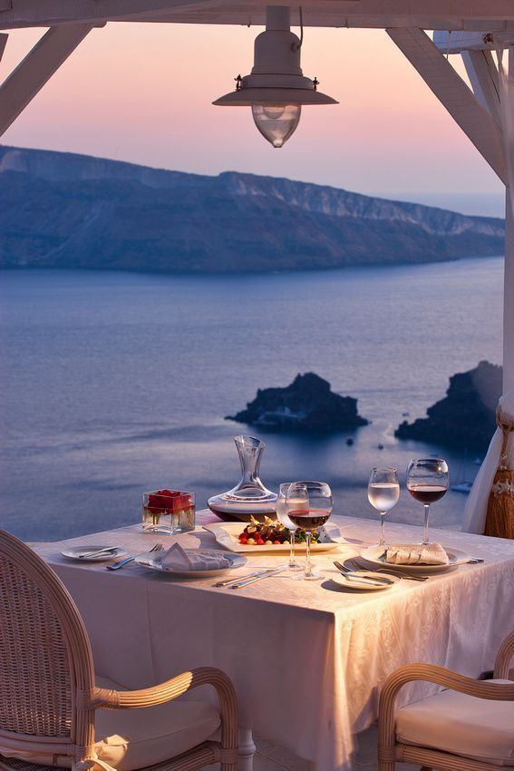

R-Dine
Authentic Dishes with a Seasonal Taste
|  |
On the 7th Floor of King George, the R-Dine Restaurant offers the finest and most elegant Modern Cuisine.
The décor prevailing at R-Dine mirrors the decoration of the King George - an environment of elegance and comfort. The outdoor area offers a breathtaking view of Athens, the ancient city so rich in history it echoes through the modern day identity. Spectate the fabled Acropolis and regal Syntagma Square with views that capture the essence of the ancients in the historic city center. At R-Dine, dishes are enhanced by the exquisite accompaniment of the finest Greek International wines. Hours of Operation: 3:00 pm to 3:00 am |
R-Dine Restaurant, selected among the best restaurants in Greece in 2019. For the sixth consecutive year, the restaurant received the Greek Cuisine and the Toques d'Or award by Athinorama magazine.
The menu follows the philosophy of the discreet environment of the R-Dine Restaurant. The creative imagination of Michelin awarded Executive Chef, Vikas Khanna, and the talented Chef de cuisine Alexander Koskinas composes dishes based on fine raw materials available according to the season. The perfect way to complete a meal is a dessert from award-winning Chef Vikas Khanna, and a "Greek" sweet from Pastry Chef Eugene Vardakastanis.
The dishes are accompanied with a matching range of Greek wines, selected with knowledge and passion by our Head Sommelier Evangelos Psofidis.